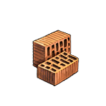

Получено: файл; исходный URL. Изображение подписано на странице-источнике; файл получен с зеркала. Совпадение с оригиналом не проверено. Страница: источник.


Кирпичи
Мой Мир; публикация 15.07.2011; редакция неизвестна- Тип
- Материалы
- Покупка
- нет данных
- Продажа
- нет данных
- Как получить
- [изображение: Сфинкс, зомби ферма, как построить Сфинкса] (ВКонтакте, ZOMBIA; требует сверки).
- Применение
- нет данных
- Особенности
- нет данных
- Версия и дата
- Мой Мир; публикация 15.07.2011; редакция неизвестна
Данные по источнику · Мой Мир · публикация 15.07.2011; редакция неизвестна
Предварительно: историческая статья, требует сверки. Требуется сверка.
- Получение · Мой Мир, исторически
- Сфинкс
- Производство / условия · Мой Мир, исторически
- 5 кирпичей: 15 цемента и 3 огня.
Данные по источнику · ВКонтакте, ZOMBIA · 15 Августа 2011, 20:17; дата редакции не установлена
Предварительно: Данные одной исторической фанатской страницы; цифры и подписи изображений требуют сверки. Описание и условия сохранены по колонкам без додумывания.. Требуется сверка.
- Описание материала
- [изображение: зомби ферма, зомби мания, кирпичи] Кирпичи
- Участвует в строительстве
- [изображение: Остров Веры, остров, зомби ферма, как построить Остров веры] [изображение: Остов "X", остров икс, зомби ферма, как построить остров икс] [изображение: Омега, зомби ферма, как построить омегу] [изображение: Вавилон, зомби ферма, как построить Вавилон] [изображение: На альфу, Альфа, зомби ферма, как построить альфу] [изображение: АЭС, зомби ферма, как построить АЭС]
- Как достать
- [изображение: Сфинкс, зомби ферма, как построить Сфинкса]
- Участвует в создании
- нет текстовых данных; возможны неподписанные изображения
Данные по источнику · браузерная Зомби Ферма / Зомби Мания; платформа требует проверки · дата URL не гарантирует дату редакции
Предварительно: Индивидуальная страница прочитана автоматически, подписи значков могут содержать ошибки; даты редакции и независимость от ЗомбиСити не установлены.. Требуется сверка.
- Основной блок страницы и подписи изображений
- Материал [иллюстрация: Кирпичи] Кирпичи Цена покупки: 1 [иллюстрация: Зомбаксы] Цена продажи: 2000 [иллюстрация: Монеты] Продать или купить Кирпичи можно в Обменке Зомби Фермы Материал Кирпичи в игре Зомби Ферма делается оптом - сразу по 5 штук в постройке Сфинкс. Кирпичи участвуют в строительстве многих зданий, их так же можно накопать. Кирпич можно выкопать Лопатами у друга: Живой изумруд [иллюстрация: Живой изумруд] Клетка [иллюстрация: Клетка] Дерево с Некрополиса [иллюстрация: Дерево с Некрополиса] Кирпичи можно создать в постройке: 5 Кирпичи [иллюстрация: Кирпичи] = 15 Цемент [иллюстрация: Цемент] + 3 Огонь [иллюстрация: Огонь] [иллюстрация: Стрелка] Сфинкс [иллюстрация: Сфинкс] Кирпичи участвуют в создании: Крыша с трубой [иллюстрация: Крыша с трубой] Материал Кирпичи участвует в строительстве многих зданий игры: Остров Х [иллюстрация: Остров Х] Остров Веры [иллюстрация: Остров Веры] Домой [иллюстрация: Домой] На Альфу [иллюстрация: На Альфу] Вавилон [иллюстрация: Вавилон] АЭС [иллюстрация: АЭС] Ангар за монеты [иллюстрация: Ангар за монеты] Врата [иллюстрация: Врата] Серьёзный коттедж [иллюстрация: Серьёзный коттедж] Купол [иллюстрация: Купол] Цирк [иллюстрация: Цирк] Леденец [иллюстрация: Леденец] Кирпичи выпадают из ценности: Скромный презент [иллюстрация: Скромный презент] Видео - Копаем Кирпичи под Живым изумрудом Зомби Фермы
Связанные сущности
нет проверенных связей — требуется сверка.